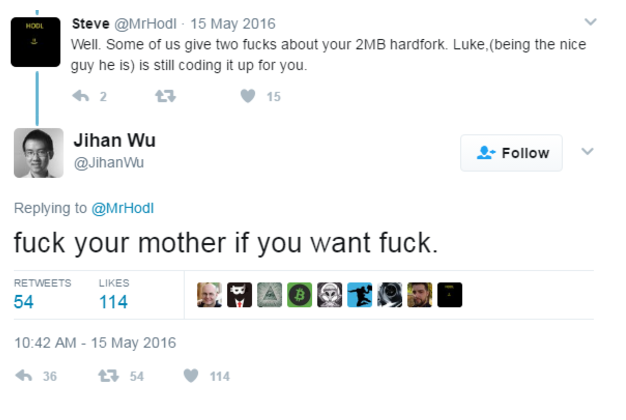
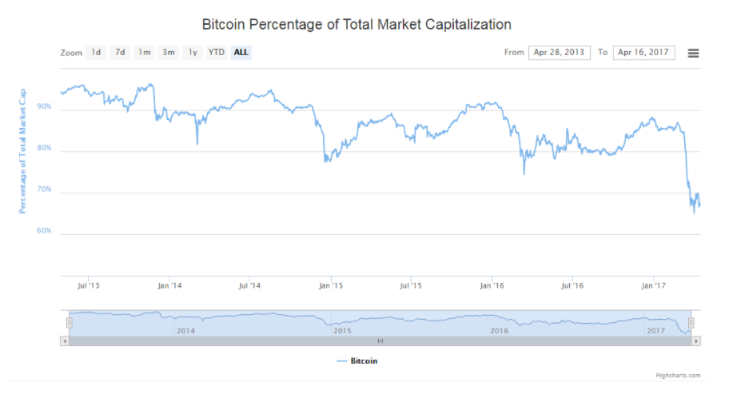
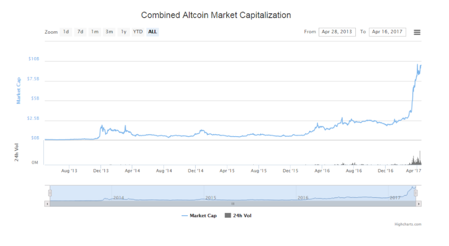
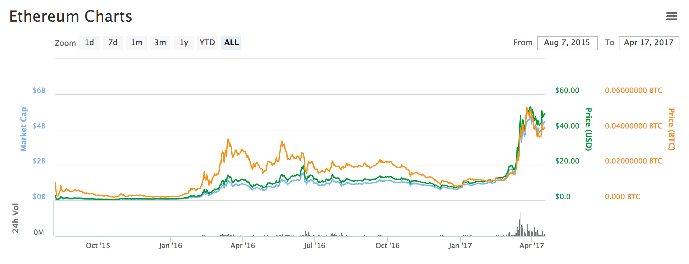
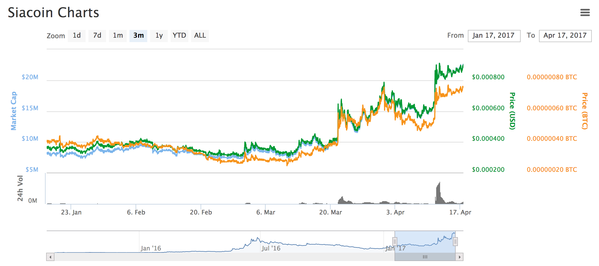

18
April
2017

MLG Capital Altcoin Analysis #1 - April 18, 2017
Cryptocurrency Industry Risks / Concerns:
Aaron SchwartzTo say that there has been a lot of drama within the bitcoin ecosystem as of late would be an understatement. In fact, the divisive statements and downright name calling taking place on both sides of the hard fork debate have us experiencing flashbacks of the 2016 presidential debate. Looks like something is just in the water. Between Roger Ver signaling support for a corporate governed altcoin over twitter to Jihan Wu telling everyone on Twitter to commit incestual acts (“f** their mother if they want ****”) 2017 is shaping up to be quite an interesting one to say the least.
So Why Should you care?
The uncertainty in the cryptocurrency ecosystem due to the hark fork debate is shaping out to be what some are calling the end of ultimate bitcoin dominance in the market while others would call it the altcoin industry starting to grow up. Whatever it is, it has led to an All-TIme Low in Bitcoin Market Dominance - dropping as low as 67% as of late - and on the flip side, All-TIme High’s for the total Altcoin Market Cap. What this has meant for many investors is that they are moving much of their portfolio from bitcoin to alternative currencies such as ethereum, dash, litecoin, monero and many other lower marker cap currencies - which have benefitted greatly in terms of price as a result.
What is going on with this hard fork?
Here’s what you really need to know. First of all, the entire debate is about Scaling Bitcoin. Why is this a big issue? The scaling issue is centered around how many transactions bitcoin can process per second. Some may say that this is one of the few things in Bitcoin that simply was not designed properly at the beginning, as there is a hard-coded limit on the size of blocks - each block is limited to 1 Million bytes. With each transaction required to be at least 250 bytes, and the fact that bitcoin blocks are found every 10 minutes, if you divide through you’re left with about 7 transactions per second, which is all the bitcoin network can currently handle. To put things in perspective, the Visa Network can process an average of 2000 transactions per second and up to 10,000 transactions per second in the busiest of seasons such as Black Friday or Christmas. Other payment networks are similarly large, as Paypal is not as old or as big a company as Visa but can handle 100 transactions per second in peak times, still magnitudes larger than that of Bitcoin. If Bitcoin ever wants to be a serious contender in the global payment realm, this is an issue that desperately needs to be fixed. Additionally, the clutter within the Bitcoin network as of late (due to more and more people joining, using, and relying on the Bitcoin network and protocol) has caused transaction times to take longer than usual and transaction fees to be higher than expected.
Bitcoin Core vs Bitcoin Unlimited
In the process of solving this issue, two main factions have emerged in this debate, Bitcoin Core and Bitcoin Unlimited, each with a completely different view of how Bitcoin’s scaling problem should be resolved. Bitcoin Core represents the core development team for bitcoin, over 100 of the most highly respected developers in the community that have been granted the role and responsibility of maintaining and updating the bitcoin source code with respect to the desires of the community. Bitcoin Unlimited, on the other hand, is a rogue faction of developers that has disagreed with the most recent course of action that Bitcoin Core has decided upon, and has taken matters into their own hands to remedy the situation.
To amend a change to Bitcoin’s code, community members submit Bitcoin Improvement Proposals (BIP) to propose an amendment to the bitcoin code, which would improve the Bitcoin network/protocol in some significant way. This is known as a soft fork or an upgrade mechanism to the Bitcoin protocol that attempts to avoid cutting nodes out of the bitcoin network through forward compatibility, meaning it is ok for nodes not to upgrade and does not risk a currency split.
Segwit vs Block Size Increase
Recently, Segwit (BIP 141), has been a source of widespread attention and debate within the community, but not many understand what it is. In simple terms, Segwit is a soft fork which would shrink the size of bitcoin transactions within blocks. This effectively allows more transactions to be included within every block, allowing more transactions to be approved by the Bitcoin network. Bitcoin Core has decided that this is the best course of action for the future of bitcoin and has signalled support for it in resolving this debate.
On the other side, is Bitcoin Unlimited - instead opting for a block-size increase, which can only be achieved with a hard fork in the bitcoin code. A hard fork is a protocol replacement mechanism which is not forward compatible, meaning it has a lot more flexibility in the changes that can be made to the protocol, but means everyone in the network needs to upgrade their node or risk a currency split.
In the end, the miners have the final say in the chain that will be adopted, and the network of miners has been torn over which chain would be adopted in the event of a hard fork. To activate Segwit, a “supermajority” of 95% of miners is required to signal for adoption. At this point, about 29% of blocks are signaling support for Segwit, with three of the largest mining pools, Bitfury, Bitclub, and BTCC signalling support for Segwit. However,on the other side, around 39% of blocks are signalling support for Bitcoin Unlimited, including the mining pools Bitcoin.com, led by Roger Ver, the Chinese mining pool Bitmain, and ViaBTC.
The debate has caused a significant amount of tension and divisiveness within the bitcoin community - causing a great deal of uncertainty within the ecosystem which has been reflected in Bitcoin’s recent downswings. At the same time, many traders, institutional investors, and companies are selling large amounts of their Bitcoin holdings into dollars and even hedging against Bitcoin by buying positions in other leading cryptocurrencies such as Ethereum, Dash, Litecoin, and more. This has been a very profitable trading strategy for many, as the alternative cryptocurrency market has seen an enormous boost in market cap and prices with the debate reaching all time highs in divisiveness within the Bitcoin community. It seems that many traders are opting for smaller, more nimble currencies without the governance issues of Bitcoin in response to this recent storm of debate.
In conclusion, one thing is for sure - now is as great a time as ever to begin learning about cryptocurrencies and upcoming assets, and start placing your bets in the right places. We have seen over 10 alternative currencies shoot up over 500% in price over the past couple months and the incessant debate within the Bitcoin community has many thinking that this is only the beginning of the role reversal. As Bitcoin falters, others shall rise, and this is what we have seen reflected by the graphs below, showing Bitcoin vs Altcoin Market Dominance.
 Masternode Coins:
Aaron SchwartzAnother huge topic of conversation in the cryptocurrency ecosystem as of late have been masternodes and masternode coins. But what exactly is a masternode and a masternode coin?
Introduction to Masternodes
Well to make it simple for you, the requirements to have a masternode up and running are the following: For one, you must download and run the official wallet software of that cryptocurrency. Next, you are required to lock in collateral to the network. The amount of collateral required to run a masternode depends on what the governance structure of that particular currency has set forth. For example, for Dash this number is 1000 DASH while with PIVX it is 10000 PIVX. You must buy the coins on an exchange such as Poloniex or Bittrex and transfer these to your wallet. After you’ve done this, the final requirements are to have a dedicated IP address for each masternode - although in the case of some, like TransferCoin, you may have multiple masternodes on one IP address - and to have this IP address running 24 hours a day without more than 1 hour downtime in most cases.
Masternodes make decisions such as locking transactions, mixing of coins to provide anonymization, voting on community governance proposals, and provide an extra layer of security to the network. In return for providing these services to the network, masternodes are paid a percentage of the total block reward on every block. This reward can come once a week or as frequent as daily or multiple times per day. This gives an incentive to masternode owners to hold a lot of coins for which they believe in the long term vision, as they can receive residual income in the form of an asset which they believe is undervalued. This in turn leads to more price stability or rises in price due to the fact that many of the biggest investors are incentivized to hold their coins and not sell. However, masternodes can be removed/sold at any time and the masternode owner simply ceases to receive rewards thereafter.
Dash & PIVX
After the recent surge of Dash to the third cryptocurrency by market cap (XRP recently overtook it) and an all time high price of around $110, masternodes have been in the spotlight. Investors like masternodes because they provide a way to receive residual income while holding an investment of which you believe in its long term vision and are bullish long term on its value. To own a Dash masternode, you currently need 1000 Dash. Another coin that has surged to prominence recently is a fork of Dash known as PIVX, which has risen the ranks over 100 spots to a market cap of $106,080,174 at #9 by market cap and an all time high price of $2.00. Community has been the biggest factor in the success of this masternode coin, as members with a belief in no corporate governance and instead community based governance and ideals have been a driving force for this Dash clone, which boasts the same Dash features of anonymous payments, almost instantaneous transactions, and masternodes, without an premine, ICO, or corporate governance structure.
A brief list of masternode coins and their specifications are provided below:
Dash - https://www.dash.org- Price: $75.83
- Market Cap ($): $548,511,275
- Rank by Market Cap: 4
- Collateral Required for Masternode: 1000 DASH
- Masternode Cost ($): ~ $76,000
- Masternode Returns: 45% of block rewards
- Features: Anonymous Transactions, Near-Instant Transactions, Corporate Governance Structure
- Community Support: https://dashnation.slack.com/
- Price: $0.024
- Market Cap ($): $216,060,300
- Rank by Market Cap: 8
- Collateral Required for Masternode: 3M NEM
- Masternode Cost ($): ~ $72,000
- Masternode Returns: % of block rewards
- Features: Encrypted Messaging, Asset Creation, Naming System
- Community Support: https://t.me/nemred
- Price: $2.00
- Market Cap ($): $106,080,174
- Rank by Market Cap: 9
- Collateral Required for Masternode: 10000 PIVX
- Masternode Cost ($): ~ $20,000
- Masternode Returns: Seesaw Rewards Mechanism, 90% of rewards to Masternode Owners and Stakers
- Features: Anonymous Transactions, Instant Transactions, Community Governance, PoS 3.0 Bitcoin Core 0.10.x, Seesaw Rewards Mechanism
- Community Support: http://slack.pivx.org
- Price: $0.35
- Market Cap ($): $4,694,669
- Rank by Market Cap: 75
- Collateral Required for Throne: 10000 CRW
- Throne Cost ($): ~ $3500
- Throne Returns: 45% of block rewards
- Features: Merge Mining with Bitcoin, Digital Asset Creation, DecentalizedApplications, Encrypted Messaging
- Community Support: https://bitcointalk.org/index.php?topic=815487.0
- Price: $0.13
- Market Cap ($): $810,806
- Rank by Market Cap: 160
- Collateral Required for Masternode: 10000 TX
- Masternode Cost ($): ~ $1300
- Masternode Returns: 50% of block rewards
- Features: Darksend, InstantX Transactions, Supports Multiple Masternodes per Wallet, In-Wallet Trading, In-Wallet Explorer
- Community Support: http://transferc.slack.com/
- Price: $0.15
- Market Cap ($): $624,027
- Rank by Market Cap: 178
- Collateral Required for Masternode: 5000 EXCL
- Masternode Cost ($): ~ $750
- Masternode Returns: 50% of block rewards
- Features: Darksend, InstantX Transactions, Block Exporer In Wallet, Bittrex Trading with API within Wallet
- Community Support: https://exclusivecoin.slack.com/shared_invite/MTY5Nzk0MzQ0Nzg4LTE0OTIyODMzODAtNTBjMzk5ZWJmMQ
Additionally, there are a number of crypto projects which have recently announced a migration to a masternode system, including the following:
Monetary Unit - https://monetaryunit.org- Migration from Quark to X11 with Masternodes has been announced to take place soon
- Price: $0.028
- Market Cap ($): $3,326,940
- Rank by Market Cap: 94
- Collateral Required for Masternode: 500000 MUE
- Masternode Cost ($): ~ $14000
- Masternode Returns: 45% of block rewards
- Features: Near-Instant Transactions, Decentralized Governance, Efficient Mining Hardware can be used, Long-Term Low Inflation Rate (3%), Utility Focus
- Community Support: https://mueslack.herokuapp.com
- Price: $0.87
- Market Cap ($): $3,411,577
- Rank by Market Cap: 91
- Collateral Required for Masternode: 5000 BLOCK
- Masternode Cost ($): ~ $4350
- Masternode Returns: % of block rewards
- Features: Decentralized Application Platform, xBridge
- Community Support: http://blocknet.herokuapp.com
- Soon releasing new POW/POS Hybrid and Barter Platform with Ubernodes
- Price: $0.13
- Market Cap ($): $658,289
- Rank by Market Cap: 172
- Collateral Required for Ubernode: 10000 BTA
- Ubernode Cost ($): ~ $1300
- Ubernode Returns: % of block rewards
- Features: Decentralized Barter Platform, Profit Sharing on Ubernodes, Upcoming ICO with TRADE token, TOR Wallet Encryption
- Community Support: https://bata-blockchain.signup.team/
Recent ICOs
Michael GordThere have been an increasing number of Initial Coin Offerings (ICOs) happening internationally and the mainstream media has begun to notice. Introductory ICO articles have been released by publications such as Fortune and the Harvard Business Review to explain this new financial concept. Already in April there have been over 5 ICO’s, some of which were highly anticipated with multi million dollars of funding raised in minutes. In addition, ICO infrastructure has developed with platforms such as TokenHub launched for software developers and entrepreneurs to manage their ICO investment and token distribution.
ICOs are not new and have been used to finance blockchain applications for the past few years, with noteworthy successes such as Ethereum and Augur raising millions of dollars in minutes. Investors are drawn to ICOs because of the opportunity to purchase tokens that might power foundational technology, with an expected increase in the price of the token if the infrastructure they power increases in usefulness. This section focuses on recent exciting ICOs that are currently active or were recently completed.
Humaniq
The Humaniq ICO went on sale on April 5th and it continues until April 27. The Humaniq team has a humanitarian vision to create a financial infrastructure that incentivizes the 2 billion people around the world who live on less than $2.50 per day, have no formal identity, little education and are bankless. Humaniq combines biometrics and blockchain to provide a mobile solution that can be be used as an identity and a bank, with a built in incentive for people in developing regions to adopt the infrastructure.
Mining in Humaniq is done by logging into your account and by doing work on their digital devices to build the Humaniq community, kind of like network marketing. “Humaniq has risen out of the cryptocommunity to do something that few have done before - which is to raise funds via an ICO to back a humanitarian mission with the idea to tackle poverty in emerging economies by offering another solution for some of the 2 billion people who suffer from financial exclusion, many who live on less than USD$2.50 a day, have no formal identity, little education, and are bankless.” said Humaniq CMO, Richard Kastelein. At time of writing, Humaniq has raised over 3000 Bitcoin.
Humaniq is led by a distributed leadership team including Richard Kastelein, who is also the founder and CEO of leading industry provider Blockchain News, and Alex Fork, author of “Bitcoin, more than money”. Humaniq also has a distributed advisory team with people such as Chami Akmeemana, director of regulatory services at Consensys, and a distributed team of ambassadors across the countries with a high population of people who live on less than $2.50 per day that Humaniq is targeting.
Cosmos
The Cosmos team held an ICO on April 6 and raised $16.8 million in less than 30 minutes, from investors outside of the United States. The fundraiser was to raise capital to build infrastructure to allow inter-chain trading of blockchain tokens, the team call “the internet of Blockchains”. Essentially it would allow people to trade Bitcoin for Litecoin or any other currency without using an exchange by trading the coins between the Cosmos hub.
The major innovation with Cosmos was the realization that a single secured chain can secure any number of proof of stake chains. According to the White Paper, the first blockchain in the Cosmos network is called the Cosmos hub, which connects to zones through their new inter-blockchain communication protocol which is similar to a sidechain. All token transfers between ones must go through the Cosmos hub, which also tracks the number of tokens in each zone. The plan is that eventually there will be many Cosmos hubs that can each secure thousands of POS blockchains.
Cosmos if being developed by the Tendermint team, who are experts in distributed consensus and have experience bringing large scale distributed computing projects into production. They also have a credible advisory board with advisors such as Thomas Greco, who was also a part of the Ethereum Foundation and ICO.
BCAP
The BCAP token was an ICO fundraiser to invest into the Blockchain Capital third venture fund. The ICO raised 10M in six hours and broke new ground with regard to regulations in ICOs. They were they first venture fund to raise investment from the community and doing so opened up the San Francisco blockchain investment asset class to the average investor. In addition, the fund will have the opportunity to make follow-up investments in the companies from their first and second fund including companies such as Coinbase, Abra, Kraken, Chain and other industry leading companies.
The team behind BCAP is led by institutional investors, Brad and Bart Stephens and Brock Pierce with a history of success in venture capital. They and the other ICO organizers put together a noteworthy list of industry experts who have agreed to participate in the ICO including investors such as Tim Draper, Matt Roszak and Simon Dixon, and blockchain entrepreneurs such as Wayne Vaughn and Erik Voorhees.
Partnerships
Michael GordA key indicator on the future performance of alternative currencies are industry partnerships that bring the token more usefulness or to new use cases. Historically, alternative currencies have not seen many headlining partnerships. Recently however, alternative currencies across the board are seeing adoption by institutions across the world with regards to proof of concepts, pilot applications and venture investment. This section will focus on the most exciting industry partnerships in the alternative currency market.
Enterprise Ethereum Alliance
The Enterprise Ethereum Alliance is a consortium of Fortune 500 enterprises, such as Microsoft and JP Morgan, financial technology service providers, such as Nuco and Consensys, and academics who have agreed to collaborate to create industry standards with Ethereum development. According to their website, the consortium hopes “to define enterprise-grade software capable of handling the most complex, highly demanding applications at the speed of business.”
This is a huge announcement for investors and the Ethereum community as a whole because it signals widespread interest in Ethereum and confirmed investment into Ethereum application and infrastructure development from leading international software providers. A second goal of the Alliance is to experiment with “new governance models designed to give the kind of control regulated enterprises need”, said Jeremy Millar the founder of the Alliance. This he believes would further empower a self-organizing network effect to further develop Ethereum infrastructure.
Sia and Next Cloud
Sia, a decentralized storage service provider based in the United States recently announced a partnership with NextCloud. NextCloud is an open source dropbox which caters to businesses. David Vorik, founder of Sia commented in the Sia slack channel that “We have created and deployed an integration of NextCloud that will allow you to use the NextCloud frontend with the Sia backend, with a quick get-started guide here: https://blog.sia.tech/using-sia-as-a-storage-back-end-for-nextcloud-90eab037959d.”
Big partnerships like this are important to give an increased usefulness to alternative digital currencies looking for a differentiating selling proposition to Bitcoin. Following the announcement, Sia jumped more than 50% after the announcement from $0.000578 to $0.000845.
BTC Media acquires the LTB Network
In March, BTC Media announced on Bitcoin Magazine that they had acquired the LTB Network, for an undisclosed amount. The article explained that part of the reason for the acquisition was to rebrand the LTB Network with an expected re-release later this year.
Investors might be interested in this acquisition however, because BTC Media also declared that part of their interest in acquiring the LTB Network was because of their proprietary LTB Coin, which is used to reward participation in the network. David Bailey commented in the article to Bitcoin Magazine that “The LTB Network has been a testbed of innovation with a proprietary content management system, token-controlled-access forums and more. It was the first to launch a rewards program using a digital currency, LTBCoin, which was awarded to content creators and audience members according to their “Proof of Participation” score.”
With an expected increased scope for the LTB Network after this acquisition, it could also signal an increased use for the LTBCoin, which has not reacted too much after the acquisition. Keep LTB Coin on your radar for any news from BTC Media. The article also explained that after the acquisition, LTBCoin holders will have the chance to participate in a new Proof of Existance application called po.et.
About MLG Capital
MLG Capital is a global blockchain investment and advisory firm focused on investing into next generation decentralized assets and providing our stakeholders with long-term investment management they can trust.